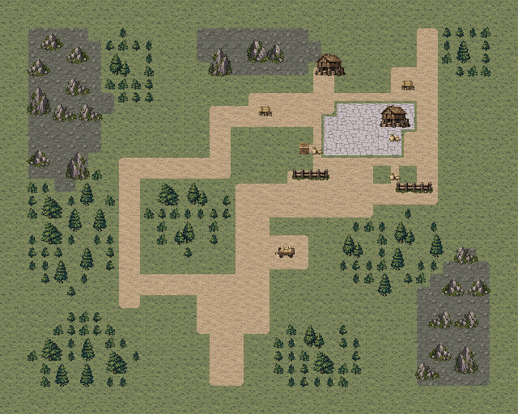
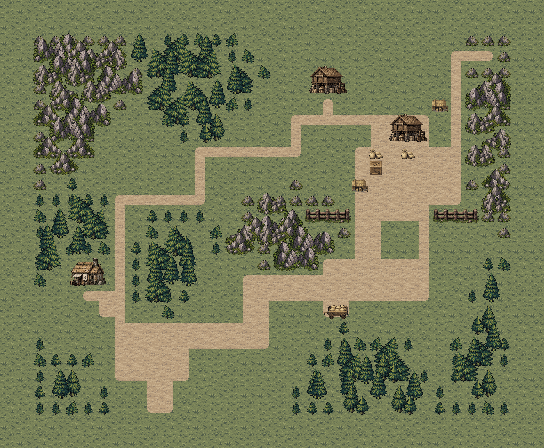
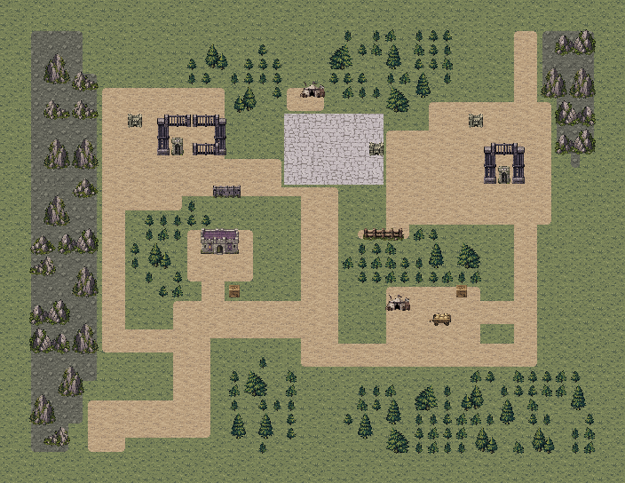
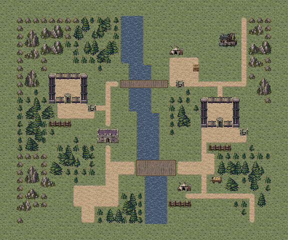
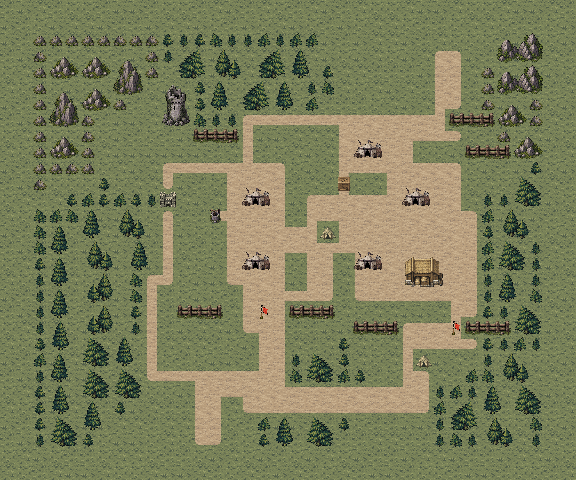
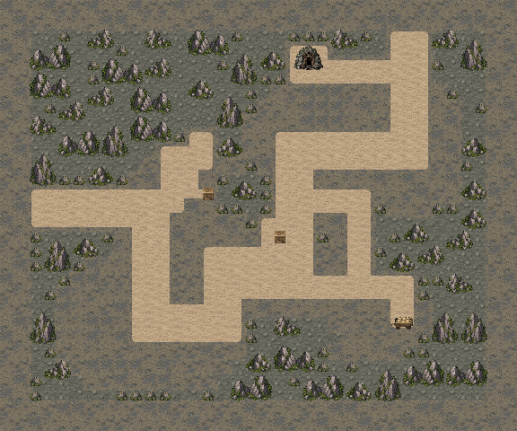
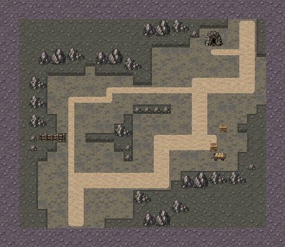

主路线
两格粮车道沿岩肩折向粮仓南门，仅在车场和卸货坪展开。
粮台、分岸囚院、营帐庭院、海崖塔堡、矿厅与诊所村分别成为六张地图的骨架。先确立地形和建筑关系，再把部署、守军与交互位置接到道路上；保留原有剧情、数值规则和人物动画。
前后地图均来自游戏原生渲染器；本轮收紧了地图尺寸，左右按各自完整边界展示，并非同像素比例的面积对比。点击原图可放大检查。
南侧入口、中央岩肩和东北粮台形成由低到高的推进方向，医舍安置在西南小院。


两格粮车道沿岩肩折向粮仓南门，仅在车场和卸货坪展开。
一格西坡林缘路经过仓吏小屋，接到粮台侧门。
主路便于集结并拦截东南待命的焚毁兵；西坡较窄，可绕开正面守军。第6回合预告、第7回合出发和连续两次点火规则保持。
蓝：候选部署；红：守军；金：剧情友军；绿：交互；紫：出口。路线仅为本页解释，不加入实机画面；实际通行以游戏地形为准。
溪流分出西囚院、东囚院和北侧文书内庭，营房与军需仓沿院路布置。


南侧两格押送道经宽桥抵达东囚院，桥头与门前留出展开地。
西路先抵西囚院，再经一格北桥进入内庭并接东院。
可集中推进南桥，也可分兵救两院；两扇门独立开启，门0释放第一队劳工与蕾娜，门1释放第二队劳工。东南侧路承接原第5敌回合援军。
蓝：候选部署；红：守军；金：剧情友军；绿：交互；紫：出口。路线仅为本页解释，不加入实机画面；实际通行以游戏地形为准。
旧瞭望塔、成片林地和营帐围出勤务道，粮料库与骑兵通道分置东侧。


南营勤务道穿过南哨，向北接指挥区；东路通往另一处军旗。
一格西林旧哨堡小路绕向帐区侧后。
正面便于控制南哨和集中兵力，东路需应对骑兵；西林绕行较窄。两面旗仍须分别站格控制，守将半血投降规则保持。
蓝：候选部署；红：守军；金：剧情友军；绿：交互；紫：出口。路线仅为本页解释，不加入实机画面；实际通行以游戏地形为准。
海崖形成半岛堡垒，残墙分隔前场与中庭，两处实体囚区分列西侧与港侧。


正门连接中庭和北门退路，在门道处展开。
西崖缺口通西牢，东侧连续港栈沿海岸通北门；港侧工棚另有救援支路。
正面攻堡、分路开牢和提前截住科兰须兼顾。科兰原9移动及第6回合半血／第8回合撤离规则保持，侧栈提供提前封堵退路的选择。
蓝：候选部署；红：守军；金：剧情友军；绿：交互；紫：出口。路线仅为本页解释，不加入实机画面；实际通行以游戏地形为准。
整片灰岩刻出南侧救援厅、中央岩柱与东北装卸厅；两组矿工在南厅护卫前排后方，工具台放在侧室。


两格运矿主巷串联矿工、工具台和北侧矿口。
一格西部检修廊绕过中央岩柱，在装卸厅附近接回主巷。
护卫前排先沿两格主巷接敌与开路，后方两组矿工再安全推进；西部支巷可绕到守军侧面。矿工仍按原威胁规则停走，任一矿工死亡仍失败，工具不会充当开路机关。
蓝：候选部署；红：守军；金：剧情友军；绿：交互；紫：出口。路线仅为本页解释，不加入实机画面；实际通行以游戏地形为准。
横溪分开南侧装车村与北岸诊所，成片林冠和村舍围出院落。


两格药车道经过中央宽桥，直接接入诊所前庭与交付点。
一格西桥沿林缘到北岸住屋，再绕至诊所西侧。
中央桥便于集中护送药车，西桥提供分兵侧绕空间；两路在诊所院前会合。药车仍按威胁停走，损毁仍会失败。
蓝：候选部署；红：守军；金：剧情友军；绿：交互；紫：出口。路线仅为本页解释，不加入实机画面；实际通行以游戏地形为准。
六图完成两轮逐关实际输入复测，并检查战后据点、救人、招募和章末仪式。另从真实M11通关记录出发，以原三人队起步，正常招募并连续完成M12—M15；首轮章末确认菜单补齐后，从该次胜利快照继续完成仪式，正常进入第二章。
初版矿工站在护卫前方，自动前进时先进入北巷首领射程，三次试走均出现矿工死亡。定稿将矿工放到南厅护卫后方，保留原移动与交战规则，让护卫先开路、矿工跟随。最终复测结果见上方记录。
复查还修正了囚院栏杆拼接、军营过大地坪、海堡东牢墙重叠、溪流被道路截断，以及矿壁平面感。建筑入口、两座桥、牢门开口与地形阻挡逐项对齐。
1159项独立规则与连通检查通过；18张实机视口的文字安全区检查无错误。M11和其余33张地图逐文件核对未变，M41仍为已确认版本。程序与人物动画代码沿用。
两轮逐关检查使用真实开发记录的隔离副本；普通按键完成移动、战斗、交互和结算，没有修改属性、随机结果或强制胜利。实际行动结果含随机命中和伤情，表内回合数不代表固定难度。
保留所有早期失败：矿道护送失败、后一次少人连续重跑在塔堡未能截住科兰，以及试玩脚本遗漏的章末菜单步骤。连续通关的修复只补普通菜单确认，未重写战斗结果。一次矿道检查在新岩石素材导入完成前启动，产生纹理加载错误；该次不计入最终两轮，导入完成后已完整重跑且日志无资源错误。未重新安装手机包；HTML资源与脚本检查不等同浏览器布局验收。